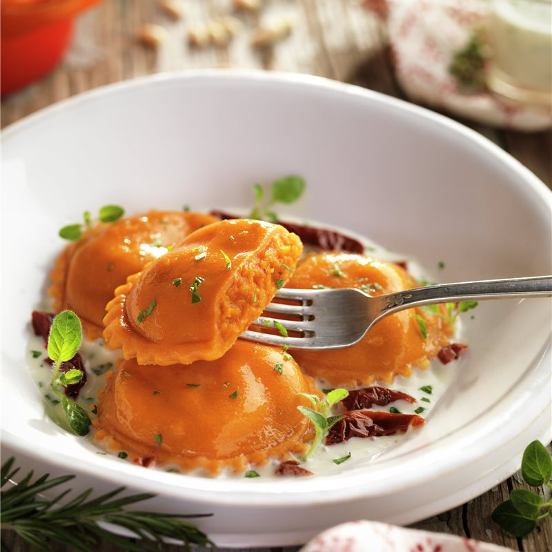
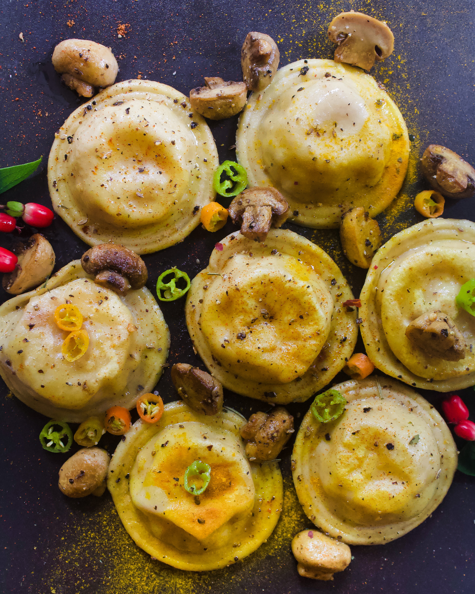

Los sorrentinos son un tipo de pasta muy conocida y solicitada en la
Argentina. A diferencia de los ravioles, que aquí se presentan en su
característica forma cuadrada, los sorrentinos son un poco más grandes
y redondos (como si fuera un sombrerito).
Su relleno puede variar y realizarse con una mezcla de jamón cocido y
quesos distintos, o de ricota y el agregado de nueces picadas, también
caprese. Aunque con el tiempo fue variando la receta e improvisándose
con diferentes combinaciones para rellenarlos.


Ingredientes para la masa
300 g de harina
3 huevos
20 g de aceite de oliva
1 cucharadita de sal
Ingredientes para el relleno
500 g de calabaza
Cebolla de verdeo, a gusto
250 g de mozzarella
Preparación
Para la masa: hacer un aro con la harina e incorporar en el
centro todos los ingredientes (aceite y huevos) y comenzar a
integrar todo, cuando sea necesario, de a poco incorporar agua. Una
vez toda la harina integrada con los líquidos, amasar 15 minutos. La
masa tiene que quedar lisa, con cuerpo. Dejarla descansar por media
hora.
Para el relleno: asar las calabazas en el horno. Cortar a la
mitad, sacar las semillas y dejar con la cáscara. Condimentar con
oliva, especias, ajo, hierbas frescas y salpimentar. Cocinar hasta
que estén tiernas y con este tipo de cocción se genera ¡mucho sabor!
Mientras tanto, saltear una cebollita de verdeo, apenas un rehogado,
para que no pierda su color. Rallar la mozzarella, o puede ser
reemplazada por otro queso. Cuando se tenga todo listo y la calabaza
esté fría, armar el puré e incorporar la cebolla y la mozzarella.
Extraer toda el agua de la calabaza.
Para el armado: estirar la masa, con palote o a máquina,
hasta llegar a un espesor fino, pero no translúcido. Colocar la masa
sobre el molde de sorrentinos, rellenar con cuchara o manga, pintar
los bordes con agua y tapar con otra masa. Pasar el palote por
arriba para que se puedan cortar los sorrentinos. Llevar al frío.
Para la cocción: abundante agua y espacio en la olla. Hervir
el agua, cuando llego al punto de hervor agregar las pastas.
Revolver para que no decanten en el fondo de la olla y sacar a los 4
minutos si la pasta está fresca. Si está congelada, 6 a 7 minutos.